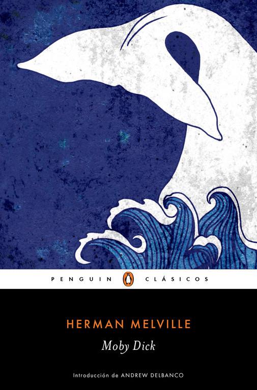

Autor: Herman Melville
Anio: 1851
Genero: Clasicos
Idioma original: Ingles
Ishmael se embarca en el Pequod y conoce al capitan Ahab, obsesionado con la ballena blanca que le arranco una pierna. Hay caceria, mar y capitulos enteros sobre el aceite de ballena. Es enorme, raro y de los titulos que hacen quedar bien en una lista.